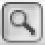
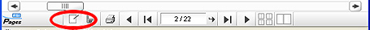
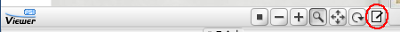

Généralités
Conditions de visualisation
- - Ce site est compatible avec les navigateurs les plus courants: Firefox, Internet Explorer et Safari. Des erreurs sont possibles avec des versions anciennes de ces navigateurs.
- - JavaScript doit être activé dans votre navigateur.
- - Flash Player 7 ou plus récent est requis. Télécharger Flash Player.
Navigation sur le Site
Sélectionner un livre par :- Dépositaire - le nom de la bibliothèque ou du musée où se trouve le livre actuellement
- Nom courant - le nom abrégé du livre
- Endroit actuel - la ville où se trouve le livre
- Date - la date de production du livre, par siècle
- Origine - le ville ou le pays d'origine du livre, de sa production
- Type - le type de codex, soit manuscrit soit imprimé
- Nombre d'illustrations - le nombre total d'illustrations du livre
- Nombre de pages - le nombre de feuillets du livre
- Transcription - le texte d'un manuscrit donné, transcrit en caractères modernes
- Feuilleter le manuscrit - Une animation Flash vous permet de tourner les pages, en avant ou en arrière. Un menu déroulant, situé au-dessus de la fenêtre d'affichage, offre plusieurs options pour consulter les feuillets.
- Description d'illustration: voir les titres et mots-clés d'illustrations (s'ils existent) dans un cadre à droite de la fenêtre d'affichage
- Sections narratives: voir la/les section(s) narrative(s) des feuillets affichés. Le cadre à droite de la fenêtre d'affichage indique en gras l'identifiant [id] de la section narrative (avec un point d'interrogation quand cela a été généré par un algorithme et n'est donc qu'une simple approximation du début de la section) et le numéro de ligne Lecoy qui débute la section (en violet). Pour certains manuscrits, la ligne de début de la la section issue de Selden Supra 57 (abrégé SS57) est aussi indiquée.
- Transcription: lire une transcription, si elle existe. Cliquer sur les onglets au-dessus du cadre de droite pour que s'affiche la colonne suivante du feuillet
- Transcription [Lecoy]: lire une transcription comportant des numéros de page (à partir de l'édition Lecoy).
- Visualiser: aperçu des images
- Naviguer - Miniatures de taille modifiable de tous les feuillets du livre
Changer la taille du cadre de visualisation
- Cliquer sur Réduire pour réduire la taille du cadre de visualisation.
- Cliquer sur Agrandir pour agrandir la taille du cadre de visualisation.
- Cliquer sur Popup pour feuilleter le livre dans une nouvelle fenêtre sans les boutons de navigation au-dessus et à gauche de l'image.
Visualiser de près une image
- Il existe plusieurs façons de zoomer sur une page. Dans l'interface Naviguer, cliquer sur la page pour "zoomer avant". Dans l'interface Feuilleter le manuscrit, le premier clic permet de sélectionner l'un des feuillets visibles. Le clic suivant permet de faire un zoom avant sur la page sélectionnée.
- Un autre moyen de "zoomer avant" est de cliquer sur
 (Zoomer avant).
(Zoomer avant). - Pour revenir au mode de zoom par défaut après avoir utiliser un outil tel que (Faire glisser l'image) ou (Tourner), cliquer sur  (Selection zoom).
Se déplacer dans le cadre de visualisation
- Après avoir "zoomé avant" sur une partie de l'image du feuillet, il existe deux moyens de se déplacer vers une autre section de la même page. L'un est de cliquer sur (Faire glisser l'image), pour ensuite cliquer sur l'image et faire glisser le curseur sur la zone souhaitée.
- L'autre moyen de visualiser une autre section de la page est de cliquer sur le cadre rouge dans la fenêtre miniature survey window
 et de la faire glisser à l'aide du curseur jusqu'à la zone souhaitée.
et de la faire glisser à l'aide du curseur jusqu'à la zone souhaitée.
Revenir à un affichage complet de la page
- Cliquer sur
 (Zoomer arrière) pour zoomer arrière progressivement.
(Zoomer arrière) pour zoomer arrière progressivement. - Cliquer sur (Réinitialiser) pour revenir au cadre de visualisation initial.
Faire pivoter une image
- Cliquer sur (Incliner) pour activer l'outil de rotation. Puis cliquer sur l'image et la faire pivoter par glissement du curseur.
Comparer deux pages
Les interfaces Feuilleter le manuscrit et Naviguer ont chacune un bouton Popup qui permet d'ouvrir le livre dans une nouvelle fenêtre. Utiliser la fonction Popup pour visualiser deux pages simultanément.
Dans l'interface Feuilleter le manuscrit:
- Pour trouver la première page: sélectionner un livre, cliquer sur Feuilleter le manuscrit et entrer le numéro de la page dans le cadre situé au-dessus de la fenêtre d'affichage.
- Cliquer sur Popup au-dessus de la fenêtre d'affichage. La page s'affichera dans une nouvelle fenêtre.
- Revenir à la fenêtre d'affichage initiale
- Trouver la seconde page: sélectionner un livre, cliquer sur Feuilleter le manuscrit et entrer le numéro de la seconde page à comparer dans le cadre situé au-dessus de la fenêtre d'affichage - ou la rechercher manuellement en feuilletant le livre.
- Cliquer sur Popup au-dessus de la fenêtre d'affichage. La page s'affichera dans une nouvelle fenêtre
- Modifier les deux fenêtres ou modifier leur taille si nécessaire
Dans l'interface Naviguer:
- Pour trouver la première page: sélectionner un livre, cliquer sur Naviguer et rechercher la page à l'aide des images miniatures, au-dessous de la fenêtre d'affichage.
- Sélectionner une miniature
- Cliquer sur Popup au-dessus de la fenêtre d'affichage. La page s'affichera dans une nouvelle fenêtre.
- Revenir à la fenêtre d'affichage initiale
- Trouver la seconde page : sélectionner un livre, cliquer sur Naviguer et rechercher la page à l'aide des images miniatures.
- Sélectionner la miniature de la seconde page à comparer.
- Cliquer sur Popup au-dessus de la fenêtre d'affichage. La page s'affichera dans une nouvelle fenêtre.
- Déplacer les deux fenêtres ou modifier leur taille si nécessaire.
Conseils pour la recherche simple
- Une recherche simple s'effectue à l'aide de termes de base. Un terme peut être une expression ou un mot. Mettre les expressions entre guillemets.
- Une recherche de proximité se fait en ajoutant le suffixe ~NOMBRE après une expression. Cela limite la recherche aux instances où les mots dans l'expression se trouvent à une distance maximum de NOMBRE les uns des autres.
- Les opérations Booléens '+'(obligatoirement présent) et '-' (ne doit pas être présent) doivent être placées devant le terme en question.
- Lorsqu'il s'agit d'une recherche basée sur un seul mot, il existe des options de recherche supplémentaires. Le suffixe '~' indique une recherche approximative. Le caractère '*' peut se substituer à de multiples caractères. Le caractère '?' peut se substituer à un seul caractère.
- Si un mot ou une expression n'est pas Booléenne, ne pas utiliser de jokers ou de recherches approximatives:
- Une recherche sur le nom d'un personnage (en français) produira aussi les variantes de ce nom.
- Toute recherche en ancien français produira les graphies variantes des mots.
- Les résultats seront ordonnés par pertinence; vous aurez toujours la possibilité de mener une recherche avancée.
Recherche avancée
- Vous pouvez rechercher à travers tous les livres et limiter votre recherche en:
- sélectionnant le/les champ(s) à inclure dans la recherche (cliquer sur le bouton « Ajouter un champ de recherche »);
- sélectionnant le/les livre(s) à inclure dans la recherche.
- Voir le lexique ci-dessous pour une définition des termes se trouvant dans l'outil Recherche avancée.
Activer l'outil marque-page en cliquant sur le bouton "bloc-notes" au-dessous du cadre de visualisation.
Si vous êtes dans l'interface Feuilleter le manuscrit, le bouton "bloc-notes" est le premier à gauche sur la barre d'outils.
Si vous êtes dans l'interface Naviguer, le bouton "bloc-notes" est tout à fait à droite de la barre d'outils.
Marquer une page
Lorsque la page à marquer est visible, cliquer sur qui aparaîtra, cliquer sur le premier bouton sur le coin gauche
qui aparaîtra, cliquer sur le premier bouton sur le coin gauche Cliquer sur (Fermer) pour fermer l'outil Bloc-notes.
Marquer une zone spécifique
Lorsque la page à marquer est visible, cliquer surCliquer à côté de la miniature pour laisser un bref commentaire à propos de la page repérée (optionnel). Cliquer sur (Fermer) pour fermer l'outil Bloc-notes.
Revenir sur un marque-page
Sélectionner le livre en question. Sélectionner l'interface Feuilleter ou l'interface Naviguer. Cliquer surSupprimer un marque-page
Cliquer surVoici un lexique de termes utilisés sur ce site. Pour un dictionnaire plus complet du vocabulaire codicologique voir MUZERELLE (Denis). Vocabulaire codicologique: répertoire méthodique des termes français relatifs aux manuscrits. Paris: Editions CEMI, 1985. (Rubricae, 1.), disponible en ligne à http://vocabulaire.irht.cnrs.fr/pages/vocab1.htm
- Cahier
- Feuillets de papier ou de parchemin pliés, coupés et cousus ensemble avec d’autres cahiers pour former un codex.
- Codex
- (pl. codices); Livre composé de feuillets (de parchemin ou de papier) pliés, assemblés et cousus. Ce terme s'utilise pour se référer aux manuscrits, aux incunables et aux livres imprimés.
- Cote
- Numéro unique donné à chaque codex dans un dépositaire qui indique sa localisation exacte. Une cote est une combinaison de lettres, de numéros ou de noms qui désignent le plus souvent où se trouve un manuscrit dans une collection, une salle, un rayon ou une imprimerie et sa position par rapport à d’autres livres sur ce rayon ou dans une même collection.
- Dépositaire
- Musée, bibliothèque ou autre espace pour garder, collectionner, préserver et transmettre des données.
- Description
- Description physique du codex dans son état actuel
- Feuillet
- (abbrév. f., pl. ff.); Feuillet individuel d'un manuscrit. Les pages d'un manuscrit sont numérotés par feuillet plutôt que par page. Chaque feuillet s'identifie par un numéro, en ajoutant « recto » ou « verso » (« r » ou « v ») désigner le côté du feuillet en question.
- Illustration
- Scène dessinée, peinte ou gravée dans un codex. Les illustrations peuvent être recherchées sur ce site par titre, personnage représenté, costume, objets présents dans la scène, paysage ou architecture.
- Incunable
- (ou incunabula, du latin); Livre imprimé avant 1501.
- Lecoy
- Numérotation conventionnelle des vers suivant l’édition de Felix Lecoy (1970) du texte du Roman de la Rose
- Nota
- Court commentaire, symbole ou dessin, le plus souvent ajouté par un lecteur, un scribe ou un correcteur médiéval.
- Note critique
- Commentaire érudit rajouté par un(e) transcriptionniste notant une particularité du texte en question
- Rubrique
- Instruction ou description ne faisant pas partie du texte mais servant de guide au lecteur. Les rubriques sont généralement écrites à l'encre rouge. Le terme est dérivé du latin rubrica (rouge).